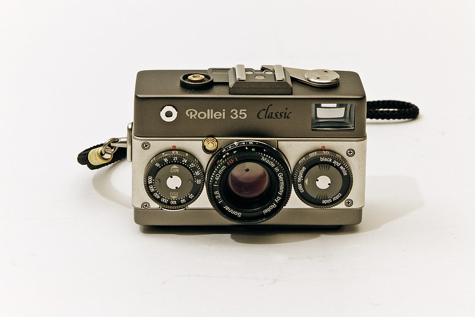

poop
Time: As long as you need, you can't rush perfection
Helpfulness Rating: 10/10
This is a step-by-step process on how to get your photography career started. It's one thing to be able to take pictures, but it's another to get your name out there. Good luck!
There is no right or wrong way to learn the skills to become a photographer. Many resources are out there, such as college courses, photography books, or even just simple YouTube videos.
Whether you chose a smartphone or a professional grade camera to take your shots, other pieces of equipment may greatly benefit you, depending on what kind of photography you would like to get into.
Before booking any photo sessions, you should know your device inside and out. Learn every feature and every quirk, so that you do not look unprofessional when you are fumbling around your camera. There are many YouTube videos on where you can find these tips and tricks, or just simply read the manual to your camera.

There are many different types of software out there, with many different price ranges. Some software may require high monthly payments, however it is possible to get away with using free software when you are first starting out.
When someone is looking to hire a photographer, they are interested in previous work they have done, to make sure they are making the right choice. It may be wise to ask friends or family to star in your photos, or take pictures at public events, to build a resume for yourself before seeking out any potential clients.
While it is good to be a well-rounded photographer, it is always good to find what you enjoy the most, and even specialize in certain areas of photography (portrait, wedding, sport, landscape, etc).
Remember that photography is a business, and while you my want to put your own personal flare on it, the client may not like it as much. If you give the client exactly what you want, they are most likely going to enjoy the product and recommend you to others.